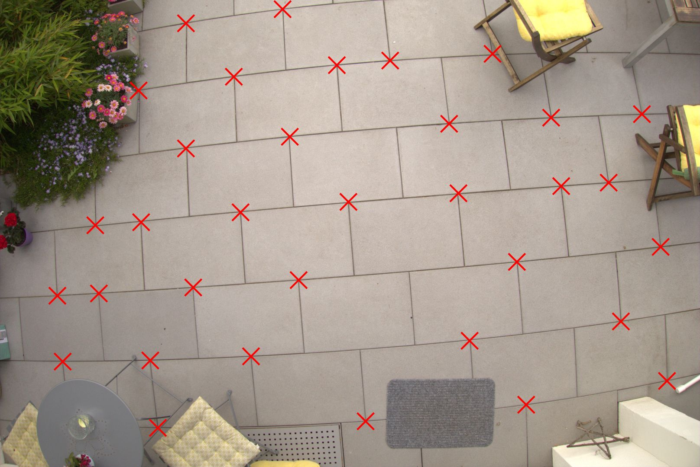
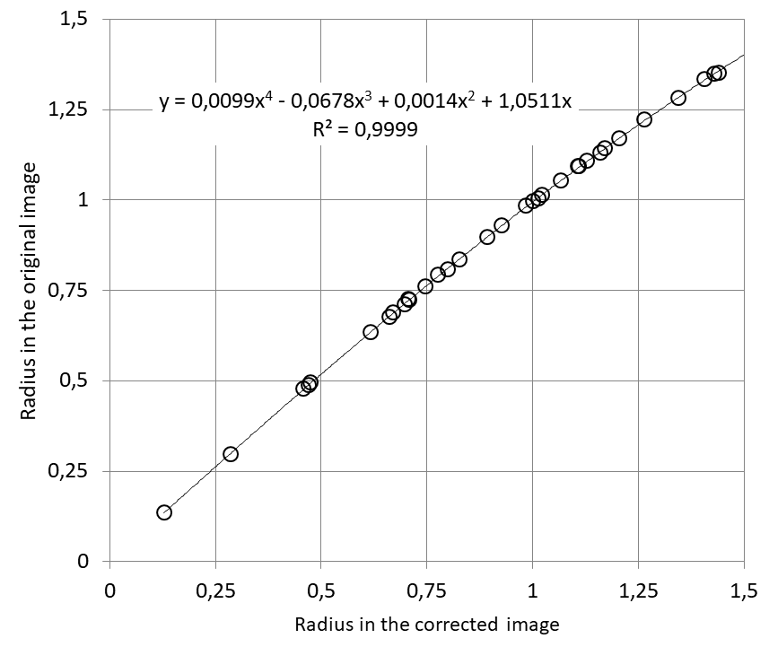
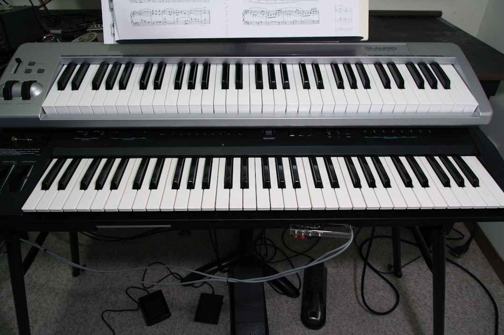

- Index
 ImageMagick Examples Preface and Index
ImageMagick Examples Preface and Index
 Introduction to Lens Correction
Introduction to Lens Correction
- Non-scaling Restraint
- Ready-made Parameter Sets
- Calibrating From Scratch
- Example
- Keyboard Example (by El-Supremo)
-
 Correcting Lens Distortion (PDF)
Correcting Lens Distortion (PDF)
When taking photographs, the images generated are actually distorted by both
lens effects and spherical perspective effects. If you plane to use photos
you will generally need to correct for these effects, and that is what will be
looked at in this section.
The majority of this page was contributed by Wolfgang Hugemann.
Introduction to Lens Correction
Fisheye lenses and low-cost wide-angle lenses (or rather zoom lenses when set
to short focal length) typically produce a pronounced barrel distortion. This
distortion can however be mostly corrected by applying suitable algorithmic
transformations to the digital photograph. One of the most-used lens
correction algorithms, introduced by Panorama Tools and used by
PTlens, is also offered by
ImageMagick, as
Barrel Correction Distortion
Method.
In this approach to the problem, the distortion is controlled by four
transformation parameters
a, b, c, d, which have to be chosen
sensibly in order to correct the distortion produced by a specific lens (or
rather a zoom camera when set to a certain focal length). Suitable values for
these parameters can hardly be found by trial and error. In the following, we
describe how to determine the lens correction parameters of this model
effectively by the use of
Hugin,
a free graphical user interface for
Panorama Tools, which is available for various operating systems.
If you don't want to deal with the details of lens correction, you may skip
the rest of this page and just buy
PTlens, which offers sophisticated lens correction for a vast number of
digital cameras and lenses at a reasonable price (by use of its large lens
database). Nowadays, some digital cameras (such as the Nikon P7000) even
incorporate lens correction in their internal image processing steps. For
photographs taken with cameras that don't offer this possibility, ImageMagick
enables you to integrate lens correction as one step of a larger image
processing script.
The following text is an abridged version of paper
Correcting Lens Distortion (PDF)
(dealing with applications in accident reconstruction). The explanations given
here are a more hands-on approach, concentrating on the ways to get in hold of
the adequate lens correction parameters.
Non-scaling Restraint
As described in the
Barrel Distortions The
barrel distortion is defined by the mathematical formula
R = ( a * r^3 + b * r^2 + c * r + d ) * r
with
r as the distance to the geometrical image center of the
digital photograph and
R as the equivalent radius in the original
image. As always with such mappings, the equation above defines a kind of
"color look-up function", i.e. where to look for the color of the pixel at
radius
r. The radii
r and
R are
normalised by half of the smaller image dimension (i.e. usually the height of
the image), such that
r = R = 1 for the midpoints of the upper
and lower edge of the image. When correcting digital photographs, we should
pay attention to the non-scaling restraint
a + b + c + d = 1
which obviously gives
R = 1 for
r = 1. Panorama
Tools calculates the parameter
d by the other parameters via
d = 1 - a - b - c
leaving us with three free model parameters, so the parameter
d
is typically omitted. ImageMagick will automatically calculate
d
by the non-scaling restraint, if it is omitted. So a typical ImageMagick
command line for lens correction would look something like
convert input.jpg -distort barrel '0.06335 -0.18432 -0.13008' output.jpg
leaving the calculation of
d to ImageMagick. The lens correction
method of Panorama Tools that we are speaking of here assumes the optical axis
of the lens and the centre of the image to be identical, which is not strictly
the case in practice (due to manufacturing tolerances). Furthermore, it leaves
effects like
mustache distortion aside. Nevertheless, it seems to work astonishingly
precisely in practice.
![[Graph]](curve.gif)
As demonstrated by the curve (
a = 0.05, b = -0.25,
c = 0.05), the relationship is typically used in the range 0 to 1.5
(aspect ratio 3:2), passes through the points (0,0) and (1,1) and must be
degressive for
r > 1.
Ready-made Parameter Sets
PTlens's current lens database, being the "marrow" of the program, is
encrypted and can only be read by PTlens itself. Until February 2006, however,
PTlens's database was coded in XML format, i.e. an easily editable text
format. This 2006 version of PTlens's XML database is still (legally)
available at
Hugin's
SourceForge Website and provides data for a lot of older camera models.
When PTlens's database became encrypted, the authors of Hugin tried to
establish a free XML coded lens database as an alternative. This database is
called
LensFun and can
be downloaded. It comes with a complete programming interface, but all you
basically need is the information for your camera in the XML file. As an
example, the lens correction parameters for the once popular Nikon Coolpix 995
are found in the file
compact-nikon.xml, which resides in the
directory
\data\db. The file can be examined by the use of a text
editor or an XML viewer:
<lens>
<maker>Nikon</maker>
<model>Standard</model>
<mount>nikon995</mount>
<cropfactor>4.843</cropfactor>
<calibration>
<distortion model="ptlens" focal="8.2" a="0" b="-0.019966" c="0" />
<distortion model="ptlens" focal="10.1" a="0" b="-0.010931" c="0" />
<distortion model="ptlens" focal="13.6" a="0" b="-0.002049" c="0" />
<distortion model="ptlens" focal="18.4" a="0" b="0.003845" c="0" />
<distortion model="ptlens" focal="23.4" a="0" b="0.006884" c="0" />
<distortion model="ptlens" focal="28.3" a="0" b="0.008666" c="0" />
<distortion model="ptlens" focal="31" a="0" b="0.009298" c="0" />
</calibration>
</lens>
|
As can be taken from the camera's technical data sheet, the zoom range of the
Nikon Coolpix 995 is 8.2 – 31.0 mm, corresponding to 38 –
152 mm for 35 mm film cameras. This gives a crop factor of 152 / 31
= 4.90, which roughly corresponds to the 4.843 given the XML file. The
coefficients of the correction by barrel distortion are supplied for six focal
lengths, namely 8.2 mm, 10.1 mm, 13.6 mm, 18.4 mm,
23.4 mm, 28.3 mm and 31.0 mm. The coefficients
a
and
c are, for this lens, set to zero, i.e. the distortion is
described only by the second-order term
b.
Note that many lens's will also have values for
a and
c parameters as
well, and these should also be interpolated in a similar way.
If we have a photograph
DSCN0001.jpg taken with a Nikon Coolpix
995 set to the shortest focal length, this photograph could be corrected by
ImageMagick via
convert DSCN0001.jpg -distort barrel '0.0 -0.019966 0.0' DSCN0001_pt.jpg
|
(The file name extension
_pt is used by PTlens to mark corrected
images.)
For the six focal lengths provided, the correction coefficient
b
can be read from the XML file. For other focal lengths, the suitable value can
be determined by interpolation between the two neighbouring focal lengths. As
an alternative, the dependency of
b on the focal length
f can be approximated by the polynomial
b = 0.000005142 * f^3 - 0.000380839 * f^2 + 0.009606325 * f - 0.075316854
So the focal length (as read from the EXIF information) is used to calculate
the lens correction parameter
b in the first step, and then, in
a second step, the lens correction (i.e. barrel distortion) is performed using
this value as the
b parameter.
The Windows section shows a
VBScript
Example in which the above equations are used, with the focal length being
extracted from a Nikon Coolpix 995 photograph via
identify.
Calibrating from scratch
Basic Approach
When determining the lens parameters, all programs rely on the same paradigm:
the ideal perspective mapping should map real world straight lines to straight
lines in the image. So if a set of real-world points P
0,
P
1, ..., P
n is known to lie on a straight line, their
images p
0, p
1, ..., p
n must also fall onto
a straight line. Any deviation from this rule has to be attributed to lens
distortion.
We need two points to determine the two parameters defining a straight line
(e.g. slope and intersection on the y-axis). Each additional point supplied
will provide another equation to determine the lens correction parameters. So
if our functional approach has only one free parameter
b (as for
the Nikon Coolpix 995 above), we would have to provide at least three points
on a real-world straight line and its image in order to determine the sought
lens correction parameter
b.
Putting it more concrete: The distortions model only uses the parameter
b, i.e. the coordinates of the corrected image
X1,
Y1 can be calculated from the coordinates of the digital photograph
by
r = s * sqrt(x1^2 + y1^2)
X1 = [(1-b) + b r^2] * x1
Y1 = [(1-b) + b r^2] * y1
Y1 = k1 * X1 + k2
This results in one equation for each point supplied on the same straight
line
[(1-b) + b r^2] * y1 = k1 * [(1-b) + b r^2] * x1 + k2
with: r = s * sqrt(x1^2 + y1^2)
Thus three real-world points and their corresponding image points would
suffice to determine the parameters describing the straight line and the lens
distortion
k1, k2, b.
In practice, the coordinates of the real-world points are rarely known, such
that one needs more than just three points to determine the sought parameters.
Most calibration software uses a rectangular grid of straight lines (often
a chequerboard) to generate a set of equations and then calculate the mapping
parameters by a nonlinear least-squares fit. Some programs generate the set of
control points on their own, often using pre-defined templates; other programs
require the user to select the control points from the calibration image.
Determining lens parameter sets with Hugin
In the following, we will demonstrate how to determine a set of lens
correction parameters by the use of Hugin. There is also a ready-made "Simple
Lens Calibration Tutorial" on Hugin's Website, but at the time of this writing
(2014), it seems to be too simple to provide reliable parameters that can
later be used for a multitude of corrections.
First of all, you have to get hold of a suitable test pattern. Basically,
a checkerboard pattern with about 10 × 7 squares, printed on
ISO 216 A3 or
alike would do and is often used. Low-cost zoom lenses (so-called
varifocal lenses)
should however be set to infinite focus during calibration, as their true
focal length might largely differ from that embedded in the EXIF for near
focus.
For fixed focus lenses you may as well use a checkerboard test pattern, which
is especially recommendable when calibrating a fisheye lens, as it may be
difficult to find a real-word object large enough to cover its field of
view.
So especially when calibrating zoom lenses / zoom cameras, you should rather
take a photograph of a modern building, as proposed on
PTlens' website.
Follow the instructions given there. The photographs may show perspective
distortion:
![[IM Output]](../img_photos/building_1.gif)
perspective
|
![[IM Output]](../img_photos/building_2.gif)
non-perspective
|
Start Hugin, and click the 'Add images ...' button on the first tab and open
the calibration image. (See
hugin.sourceforge.net for
a screenshot of Hugin's interface.) At the button of the tab set 'Optimise' to
'Custom parameters' (which will add a new tab named 'Optimiser', you would
otherwise not come to see). On the 'Stitcher' tab, set the 'Projection' to
'Rectilinear'. On the 'Control Points' tab, you see your test photograph
twice and you can define sets of points that lie on the same straight line by
picking these point groups in both versions of the photograph.
But do not pick the exact same points in both versions, such that the points
are identical in both images, as this would mislead the optimiser to take the
easy way and determine the parameters of an one-to-one correspondence.
Instead, you should rather choose different points on the same line in both
versions of the image. For test purposes, you can define a few of such point
sets, at best near the edges of the image, where the straight lines are more
distorted. You will find that definining such point sets in Hugin is a rather
tedious business (which may be one of the reasons for the lensfun database
being so small).
Then switch to the 'Optimiser' tab and chose the parameters to optimise by
left-clicking them with the ctrl-key pressed. (See hint at the top of the
tab.) I would recommend to optimise 'Yaw(y)', 'Pitch (p)' and the lens
parameters 'a', 'b' and 'c'. The horizontal field of view 'Hfov (f)' is
calculated from the EXIF data in the test image, by use of the
FocalLengthIn35mmFilm entry
f:
Hfov = 2 × arctan (18 mm / f)
with 18 mm being half of the width of a 35 mm negative (which
measures 36 × 24 mm).
Then press the button 'Optimize now!'. The resulting parameters 'a', 'b' and
'c' should fall below 0.01 for wide angle lenses and below 0.1 for fisheye
lenses. If the values are larger, the optimisation has probably failed. If
so, check the point sets on the 'Control Points' tab: the control points are
probably out of order or not correctly associated with their corresponding
lines.
The optimiser also seems to be sensitive to the start set (mathematically
speaking: the start vector) provided, i.e. setting all parameters to zero
might be the wrong choice. You can edit the start vector by either
double-clicking the values on the 'Optimiser' tab or by activating the check
box 'Edit script before optimising' at the right buttom of tab page. This will
bring up a text box prior to the optimisation, which will allow you to edit
the corresponding section of the Hugin project file. Set the start vector a,
b, c back to
a0.0 b0.0 c0.0 (or some other suitable values)
before re-starting the optimiser. Experience shows that it might help to set
'a' to some positive value, especially for fisheye lenses.
For a camera equipped with a fixed lens, one does this calibration once and
for all. For a camera with a zoom lens, one has to cover the entire range of
focal lengths by calibrating at about five different focal lengths.
When having determined such a parameter set, give it a test in ImageMagick
via
convert calibration_image.jpg -distort barrel 'a b c' flat.jpg
|
replacing the values
a b c with the ones just determined.
The lines in the output image should be exactly straight, otherwise the
optimisation has failed and needs to be performed with a deviating start
vector or a corrected control point set.
Defining point sets
For a serious calibration, it is recommendable to manually edit the Hugin
project file and define the point coordinates and point sets by other means.
The project file is a plain text file with the extension PTO, you can open it
with a simple text editor and supply a point list. A single line in its
section
# control points looks like this:
c n0 N0 x175.0 y87.8 X1533.3 Y62.6 t3
where
x, y are the pixel coordinates in the source image (left
image on the tab) and
X, Y are the pixel coordinates in the
target image (right image on the tab) – which are actually two versions
of the same image in this special case. (Usually these would be two different
images lying next to each other in a panorama.) The intro
c n0 N0
is standard code and the trailer
t3 is the numbering of the
associated straight line, starting with the index 3. As you can take from the
above example, the pixel coordinates may have fractional parts.
Of course,
x, y and
X, Y have to lie on the same
straight line. They must however not be identical, as the optimiser would
refuse to work in this case (see above). The easiest approach to garantuee
this, is to use the same points in both images but with reverse ordering for
the target coordinates,e.g. use p
1, p
2, p
3,
p
4 in the left image and P
4, P
3,
P
2, P
1 in the right one.
Determine the pixel coordinates in the source image by a point-picking tool.
You can use any image viewer to do this, namely one that can store such data.
A platform-independent tool for this would be
Fiji. I (working under Windows) used polylines
in
WinMorph to do so.
You should follow a pre-defined strategy when picking the points, e.g. pick
the same count of points on each (more or less) horizontal line, going from
left to right (i.e. follow a zig-zag line in the entire image, like the
cathode ray beem in a tv tube). Such a strategy will simplify the ordering
the target point coordinates. The text file lines defining source and target
point coordinates can then be established either manually or by means of
a software tool. (I use an Excel VBA subroutine to perform this task.) When
ready, copy the point list to the corresponding section of the PTO file, save
it and re-open it with Hugin. The result should look like this:
![[IM Output]](../img_photos/hugin.jpg)
Control point grid in Hugin
|
A ready-made example, both with a calibration image and the corresponding
Hugin project is provided in the ZIP file
olympus_c2500l.zip.
Re-engineering from camera created thumbnail
There are several cases where we already have an image pair, one being barrel
distorted, the other one being already corrected. This correction may have
been performed with some other lens-correction software, which doesn't tell us
about the correction parameters.
Furthermore, a lot of contemporary cameras (2019) offer to perform the lens
correction internally for JPEG images. However, this functionality is usually
not applied to RAW images. (Well, it's raw.) Nevertheless, the RAW image
contains a JPEG preview to which the correction has already been applied by
the camera. ImageMagick can read RAW images by the use of dcraw. Thus one may
convert the raw image to JPEG without lens correction and compare the result
to the internally corrected JPEG thumbnail.
In case of such an image pair, the correction parameters can be calculated
straightforward. By picking corresponding point pairs in both images, we can
directly establish the relationship between r and
R.

Raw Image (barrel distorted)
|
![[Corrected Image]](thumb_marks.jpg)
Corrected Thumbnail (to re-engineer)
|
As shown in the above example, we are free of choice which point pairs to
choose; these neither have to follow straight lines nor even have to lie on
geometrical patterns. We just have to fill a table with corresponding values
of r and R and then calculate a regression curve,
for example by means of a spreadsheet
diagram.
![[Calabration]](calibration_points.gif)
Calibration Points
|

Regression (scaled)
|
Hence the ImageMagick command line is
convert barrel.jpg -distort barrel '0.0099 -0.0678 0.0014 1.0511' flat.jpg
|
You can also apply the same command directly to the DNG camera format image
"
barrel.dng" directly too.
Examples of Lens Correction
Camp Mobile
![[IM Output]](../img_photos/campmobile.jpg)
Original
|
![[IM Output]](../img_photos/campmobile_pt.jpg)
Corrected
|
![[IM Output]](../img_photos/campmobile_comp.jpg)
Difference
|
The original photograph of the campmobile to the left had to be taken from
a rather short distance during dusk, as space was limited due to a steep
declivity at the back of the photographer. (The poor lighting conditions
explain the blue tint which stems from severe lightening in the
post-processing.) The original photograph shows pronounced barrel distortion,
visible especially in the horizontal stripe near the top of the image and for
the back corner of the build-up. The Nikon Coolpix 995 used for this shot is
found in PTlens's database, so the distortion could readily be corrected, as
seen in the middle.
The image to the right shows the difference between greyscale versions the two
photographs, calculated by subtraction of the two, followed by negation and
extreme clipping and Gamma correction. Again, the effects of the correction
are best illustrated by the horizontal stripe at the top. The white circle
(indicating zero difference) results from the non-scaling restriction: the
points on a circle with a diameter equal to the smaller dimension of the image
remain unaltered.
GoPro flattening
The GoPro camera lens produces a pronounced barrel distortion, which seems to
be part of its branding. For instance, the GoPro Hero 3+ silver edition has
a fisheye lens with a fixed focal length of 2.77 mm, corresponding to
a focal length of 16 mm in 35 mm film, if the entire photosensitive
area is used. The GoPro Hero 3+ has three photo modes:
- 10 megapixel = 3680 × 2760 pixel wide angle (16 mm in 35 mm film)
- 7 megapixel = 3072 × 2304 pixel wide angle (16 mm in 35 mm film)
- 5 megapixel = 2624 × 1968 pixel medium angle (23 mm in 35 mm film)
The GoPro Hero 3+ is equipped with a 1/2.3" sensor, which has a crop factor of
5.64. (Which
gives a focal length of only 15.62 mm in 35 mm film, the 16 mm
provided by the EXIF information probably being due to rounding.) The first
two modes seem to use the entire photosensitive area; the reduced resolution
obviously being achieved by sub-sampling. The distortion parameters are
therefore the same, as can be proven in practice. The 5-megapixel mode
obviously uses only part of the photosensitive area, as 3680 / 2624 × 16
≈ 23. The lens parameters can be determined to
- wide angle:
- a = 0.06335
- b = -0.18432
- c = -0.13009
- medium angle:
- a = 0.01359
- b = -0.06034
- c = -0.10618
In theory, the parameters of the second mode can be derived from the first, as
the radii
ri and
Ri are
coupled by the scale factor κ = 3680 / 2624 = 1.402, which leads to:
- a2 = a1 / κ³
- b2 = b1 / κ²
- c2 = c1 / κ
The above parameters, resulting from an independent optimisation, differ not
much from these theoretical values.
Correspondingly, the parameters for the various video modes can be derived
either by optimisation or from the part of the sensor area that is used by
this mode. For video, the horizontal field of view cannot be derived from the
EXIF data. It can be calculated from the photosensitive area used, determined
from the video itself (by taking footage under controlled conditions) or just
estimated together with the other parameters, i.e. left as a free parameter in
the optimisation.
The parameters for HD video (1920 × 1080) are:
- a = 0.030530
- b = -0.124312
- c = -0.038543
These parameters can be used for a frame-wise correction with ImageMagick. As
an alternative, they can be used to "flatten" the entire video by the
AVIsynth plugin
DeBarrel,
which also uses the Panorama Tools lens correction model.
Two Keyboards
by el_supremo
The photo that I took of my two keyboards has a very obvious barrel distortion
in it, because it was taken at a focal length of 17 mm.
This kind of distortion can be corrected with, for example, Canon's Digital
Photo Professional (I have a Canon 50D camera). Other manufacturers of SLR
cameras usually provide software to do this kind of correction for their
lenses but I wanted to see how well the above examples would work on this
photo.
The first step is to go to the
LensFun WebSite and download the latest version of their camera database.
Unzip the package (winzip can unzip a .tar.gz file in Windows) and then in the
"
lensfun/data/db" directory look for the file which corresponds
to your camera manufacturer. In my case I looked at
"
slr-canon.xml" which can be edited with any text editor.
Now I find the information for the specific lens I am using which in this case
is an "
EF-S 17-85mm". The information for that lens looks like
this:
<lens>
<maker>Canon</maker>
<model>Canon EF-S 17-85mm f/4-5.6 IS USM</model>
<mount>Canon EF-S</mount>
<cropfactor>1.6</cropfactor>
<calibration>
<distortion model="ptlens" focal="17" a="0.021181" b="-0.055581" c="0" />
<distortion model="ptlens" focal="20" a="0.019344" b="-0.043786" c="0" />
<distortion model="ptlens" focal="22" a="0.015491" b="-0.026682" c="0" />
<distortion model="ptlens" focal="28" a="0.008084" b="-0.007472" c="0" />
<distortion model="ptlens" focal="30" a="0.005522" b="-0.001763" c="0" />
<distortion model="ptlens" focal="35" a="0.003149" b="0.002207" c="0" />
<distortion model="ptlens" focal="44" a="0" b="0.008269" c="0" />
<distortion model="ptlens" focal="53" a="0" b="0.008792" c="0" />
<distortion model="ptlens" focal="61" a="0" b="0.00738" c="0" />
<distortion model="ptlens" focal="72" a="0" b="0.006226" c="0" />
<distortion model="ptlens" focal="78" a="0" b="0.007095" c="0" />
<distortion model="ptlens" focal="85" a="0" b="0.007288" c="0" />
</calibration>
</lens>
|
The calibration entries give distortion values for a range of focal lengths
from 17mm up to 85mm. If the focal length I needed was between two of those
values, I could either choose whichever was closest or I could interpolate the
values. Since the photo I'm correcting was taken at 17mm I need the
information from the first line of the calibration information. That gives me
the values:
a="0.021181" b="-0.055581" c="0"
These are the three parameters which are used to correct the lens distortion.
However for some older versions of IM, The barrel distortion correction
requires a fourth parameter d. Fortunately, it is easy to calculate the value
of d from the other three using this simple formula:
d
= 1-a-b-c That means:
d="1.0344".
  |
IM will work out the value of 'd' automatically, of it is not provided as
a distortion argument, but some older versions of IM did not do this.
|
That makes the actual
Barrel Distortion, to
correct the lens distortion...
convert keyboards.jpg \
-distort barrel "0.021181 -0.055581 0" \
keyboards_ptlens.jpg
|

|
Of course you should not save to JPEG until you have finished processing
your image completely, due to the JPEG lossy compression.
|
In the original photo the distortion is particularly obvious along the bottom
of the music stand and along the upper keyboard. These distortions are almost
completely gone in the output photo. A visual comparison of this result with
that obtained from Canon's software shows essentially the same result.
El-Supremo
![[IM Output]](../img_photos/building_1.jpg)
![[IM Output]](../img_photos/building_2.jpg)
![[IM Output]](../img_photos/keyboards.jpg)
{kind=link}
{kind=link}
{kind=link}